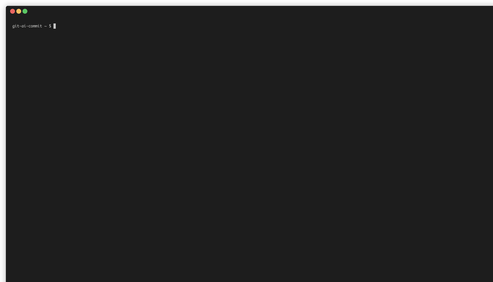

Powered by Ollama
AI-Powered Git Commit Messages
Generate concise, relevant commit messages for your Git repositories using local AI models with Ollama. Streamline your workflow and let AI handle the first draft of your commit messages!
